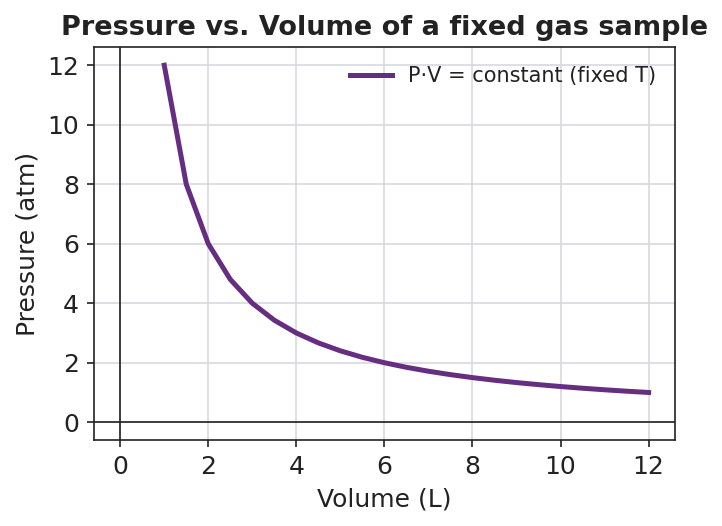

01 Phenomenon
A scuba diver fills a 12-liter tank with compressed air and descends to 30 meters, where the water squeezes the gas to about 4 times surface pressure (≈ 4 atm). After the dive, the gauge shows the diver used about 50 liters of surface air. The tank never changed size — and the diver only carried 12 liters of space. Same amount of gas, very different volume, depending on the pressure and temperature around it.
02 Driving question
When pressure, volume, and temperature all change at once, how do we predict what happens to a sample of gas?
03 Notice & wonder
| I notice… | I wonder… |
|---|---|
Turn & Talk #1: A weather balloon rises from the ground into the sky, where the air pressure is much lower but the temperature is much colder. Lower pressure makes a gas expand; colder temperature makes it shrink. In one sentence, why can’t you tell just by thinking whether the balloon gets bigger or smaller?
04 Initial model
You will be shown a data table for one fixed sample of gas at four different states. For each row, compute P × V ÷ T and write the result in the last column.
| State | Pressure P (kPa) | Volume V (L) | Temperature T (K) | P·V/T (kPa·L/K) |
|---|---|---|---|---|
| 1 | 100 | 6.0 | 300 | |
| 2 | 200 | 3.0 | 300 | |
| 3 | 200 | 4.0 | 400 | |
| 4 | 50 | 12.0 | 250 |
What do you notice about the four numbers in the last column? _______________________________________________
Even though P, V, and T are different in every row, the quantity P·V/T is _______________.
If P·V/T is the same for state 1 and state 2, write an equation that sets them equal using P₁, V₁, T₁ and P₂, V₂, T₂:
05 Investigate
Part 1 — ABCs: What does the constant mean?
Before your teacher names anything, use your data table above.
For a fixed amount of gas, the quantity P·V/T always stays _______________.
If you increase the pressure on a gas (and keep temperature fixed), what must happen to its volume to keep P·V/T constant? _______________
If you increase the temperature of a gas (and keep pressure fixed), what must happen to its volume to keep P·V/T constant? _______________
Part 2 — Solve the phenomenon problems
Use the combined gas law: P₁V₁/T₁ = P₂V₂/T₂. Always check that temperatures are in Kelvin (K = °C + 273) before you substitute.
Problem 1 — Weather balloon (solve for V₂). A weather balloon holds 4.0 L of gas at ground-level STP (P₁ = 101.3 kPa, T₁ = 273 K). It rises to where P₂ = 25.0 kPa and T₂ = 220 K. Find the balloon’s volume aloft.
Rearranged equation: V₂ = _______________________________________________
Substitute and solve: V₂ = _______________ L
Did the balloon get bigger or smaller? Which effect won — the pressure change or the temperature change? _______________________________________________
Problem 2 — Scuba ascent (solve for V₂). A regulator releases 12.0 L of air at depth, where P₁ = 4.0 atm and T₁ = 283 K. The air rises to the surface, where P₂ = 1.0 atm and T₂ = 293 K. What volume does that air occupy at the surface?
Rearranged equation: V₂ = _______________________________________________
Substitute and solve: V₂ = _______________ L
Does your answer help explain how a 12 L tank delivers about 50 L of air? _______________________________________________
Part 3 — Reading the inverse pressure–volume curve
Look at figures/pressure_volume_inverse.png:

As volume increases, pressure _______________.
This curve shows the relationship between P and V when temperature is held constant. This special case of the combined gas law is also known as _______________ law.
When two points on this curve have the same temperature, the combined gas law’s temperatures cancel, leaving the equation _______________ = _______________.
06 Make it make sense
Solve each problem with the combined gas law. Show your rearranged equation, your substitution, and your final answer with units. Convert any Celsius temperature to Kelvin first.
1. Weather balloon (solve for V₂). A balloon holds 4.0 L at STP (101.3 kPa, 273 K) and rises to P₂ = 25.0 kPa, T₂ = 220 K.
V₂ = _______________ L
2. Scuba ascent (solve for V₂). 12.0 L of air at P₁ = 4.0 atm, T₁ = 283 K rises to P₂ = 1.0 atm, T₂ = 293 K.
V₂ = _______________ L
3. Compressed and heated (solve for P₂). A 2.0 L gas sample at P₁ = 101.3 kPa and T₁ = 300 K is heated to T₂ = 450 K and compressed to V₂ = 1.5 L. Find the new pressure P₂.
P₂ = _______________ kPa
07 Key vocabulary
- combined gas law
- the equation P₁V₁/T₁ = P₂V₂/T₂, which merges the pressure–volume and temperature–volume and temperature–pressure relationships to relate the pressure, volume, and absolute temperature of a fixed sample of gas at two different states; for a fixed gas sample the quantity P·V/T is constant
- absolute temperature
- temperature measured in Kelvin from absolute zero (K = °C + 273); the combined gas law requires absolute temperature because volume is directly proportional to temperature only on a scale whose zero is true zero
- STP (standard temperature and pressure)
- the defined reference state of 273 K and 101.3 kPa (Reference Table A); when a gas-law problem specifies "at STP," it supplies the pressure and temperature for one of the two states
Use each term in a sentence about today’s investigation. Do not copy the definition — describe something you actually did or observed.
combined gas law: _______________________________________________ _______________________________________________
absolute temperature: _______________________________________________ _______________________________________________
STP: _______________________________________________ _______________________________________________
08 Revise your model
Return to your Initial Model (the data table and the equation you wrote). Add vocabulary labels:
Next to your equation P₁V₁/T₁ = P₂V₂/T₂, write the name of the law: _______________
Label the temperature variables: temperatures in this equation must always be in _______________ (the absolute scale).
Write a revised appositive sentence naming the law and stating the equation:
The combined gas law — _________________________ — relates the _______________, _______________, and _______________ of a fixed gas sample.
Then finish this Because / But / So sentence:
As a scuba diver ascends from depth to the surface, the released gas expands because __________________________________________, but __________________________________________, so __________________________________________.
09 Exit ticket
(a) A gas occupies 3.0 L at 100 kPa and 300 K. The pressure rises to 150 kPa and the temperature rises to 400 K. Calculate the new volume V₂. Show your setup.
Rearranged equation: V₂ = _______________________________________________
V₂ = _______________ L
(b) A gas occupies 5.0 L at STP. It is moved to a new state where the pressure is 50.65 kPa and the temperature is 546 K. Calculate the new volume V₂. (Hint: write down P₁ and T₁ from the definition of STP.)
P₁ = _______ kPa T₁ = _______ K
V₂ = _______________ L
(c) In one sentence, explain why the temperature must be converted to Kelvin before using the combined gas law.
10 Explore further
- Combined gas law data analysis: Provide students with a data table of a fixed gas sample at several (P, V, T) states — e.g., a weather balloon released at STP and tracked as it rises into colder, lower-pressure air. Students compute P·V/T for each row and discover that the quotient stays (nearly) constant, which is the empirical basis of HS-PS1-9. Connect to the inverse P–V curve in `figures/pressure_volume_inverse.png`.
- Weather-balloon problem: A latex sounding balloon is filled to 4.0 L at ground-level STP (101.3 kPa, 273 K) and rises to an altitude where pressure is 25.0 kPa and temperature is 220 K. Students predict, then calculate, the balloon's volume aloft (≈ 13 L) and reconcile the two competing effects: lower pressure inflates it, colder temperature shrinks it, and the pressure effect wins.
- Scuba "air at depth" calculation: Using the depth–pressure relationship illustrated in `figures/scuba_volume_vs_depth.png`, students compute the surface volume of gas a diver actually consumes from a tank at depth — the lesson's anchoring calculation.